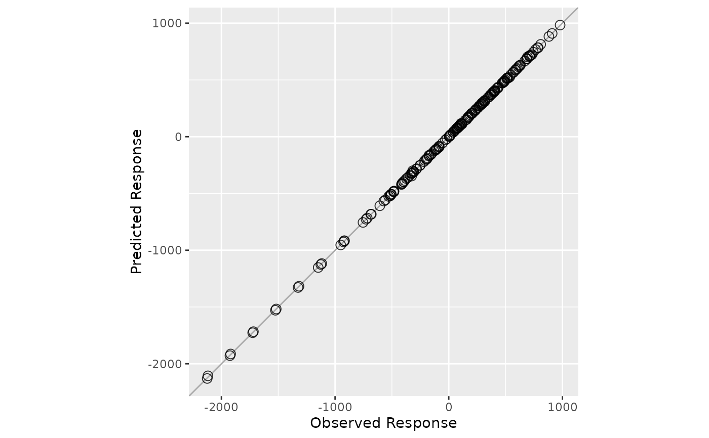

K-fold cross validation for ensemble partial least squares regression.
Arguments
- x
Predictor matrix.
- y
Response vector.
- nfolds
Number of cross-validation folds, default is
5. Note that this is the CV folds for the ensemble PLS model, not the individual PLS models. To control the CV folds for single PLS models, please use the argumentcvfolds.- verbose
Shall we print out the progress of cross-validation?
- ...
Arguments to be passed to
enpls.fit.
Value
A list containing:
ypred- a matrix containing two columns: real y and predicted yresidual- cross validation result (y.pred - y.real)RMSE- RMSEMAE- MAERsquare- Rsquare
Note
To maximize the probablity that each observation can
be selected in the test set (thus the prediction uncertainty
can be measured), please try setting a large reptimes.
See also
See enpls.fit for ensemble
partial least squares regressions.
Author
Nan Xiao <https://nanx.me>
Examples
data("alkanes")
x <- alkanes$x
y <- alkanes$y
set.seed(42)
cvfit <- cv.enpls(x, y, reptimes = 10)
#> Beginning fold 1
#> Beginning fold 2
#> Beginning fold 3
#> Beginning fold 4
#> Beginning fold 5
print(cvfit)
#> Cross Validation Result for Ensemble Partial Least Squares
#> ---
#> RMSE = 3.6716
#> MAE = 2.511028
#> Rsquare = 0.999960
plot(cvfit)
